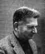

René Thom is known for his development of catastrophe theory, a mathematical treatment of continuous action producing a discontinuous result.
From 1931 Thom attended the Primary School in Montbéliard, the town of his birth in which his parents were shopkeepers. It was at this primary school that Thom first showed his academic potential winning a scholarship. He attended Collège Cuvier at Montbéliard and received his baccalaureate in elementary mathematics from Besancon in 1940. However, his life was about to be disrupted by World War II.
Thom's parents sent him and his brother south to avoid the conflict
although they themselves remained in Montbéliard.
After helping with the harvest near Romont, Thom returned to France
being taken to Lyon where he lived with a friend of his mother. While in
Lyon he continued his education, receiving his baccalaureate in philosophy
in June 1941. After this he returned to his parents home in Montbéliard
but was soon in Paris again to continue his education.
Thom attended the Lycée Saint-Louis in Paris and applied to enter the Ecole Normale Supérieure but failed to gain entrance in 1942. Determined to take advantage of a university education at the Ecole Normale Supérieure he applied again in 1943 and this time he was :
... successful (but not brilliantly so!).At Ecole Normale Supérieure times were difficult as Paris was occupied by the German forces. However, mathematically it was an exciting time for Thom who was to be strongly influenced by Henri Cartan and the Bourbaki approach to mathematics. World War II ended while Thom was still studying at the Ecole Normale Supérieure :
... the last year, after the 'victory', was a year of opening, bringing with it the impression of once more living life to the full. Of this rebirth I can recall a sensation of freedom that I found hard to control.In 1946 Thom moved to Strasbourg so that he could continue to work with Henri Cartan. There he was influenced by others including Ehresmann and Koszul. His doctorate, supervised by Henri Cartan, was awarded in 1951 for a thesis entitled Fibre spaces in spheres and Steenrod squares. The work of the thesis was carried out in Strasbourg but Thom presented it to Paris. The foundations of the theory of cobordism, for which Thom later received a Fields Medal, already appear in his doctoral thesis.
Thom was awarded a fellowship to allow him to travel to the United States in 1951 and enabled him to meet Einstein, Weyl, Steenrod and attend the seminars of Calabi and Kodaira. Thom returned to France and taught at Grenoble in 1953-54, then at Strasbourg from 1954 until 1963. He was appointed a professor in 1957.
In 1964 he moved to the Institut des Hautes Etudes Scientifique at Bures-sur-Yvette. However this prompted a change in direction as he explains in :-
Relations with my colleague Grothendieck were less agreeable for me. His technical superiority was crushing. His seminar attracted the whole of Parisian mathematics, whereas I had nothing new to offer. That made me leave the strictly mathematical world and tackle more general notions, like the theory of morphogenesis, a subject which interested me more and led me towards a very general form of 'philosophical' biology.Thom's theory is an attempt to describe, in a way that is impossible using differential calculus, those situations in which gradually changing forces lead to so-called catastrophes, or abrupt changes. The theory has widespread application in the physical and biological sciences and in the social sciences. Presented by Thom in Structural Stability and Morphogenesis (1972), the theory has since been developed by many mathematicians. Thom explains why the theory which was marked by enormous popular success has fallen from favour:-
It is a fact that catastrophe theory is dead. But one could say that it died of its own success. It was brought down by the extension from analytical (or algebraic) models to models that were only smooth. For as soon as it became clear that the theory did not permit quantitative prediction, all good minds ... decided it was of no value. When it comes down to it, this extension resulted from B Malgrange's extension of the preparation theorem.Thom's earlier work had made him well known before he worked on catastrophe theory. His work on topology, in particular on characteristic classes, cobordism theory and the Thom transversality theorem led to his being awarded a Fields medal in 1958. However, Thom feels that in some sense he did not deserve the honour :-
... I have the impression that work was done just a little while later that was greater in depth and sagacity than mine and whose authors were quite as deserving, if not more so, of the medal (such as my co-medallist Klaus Roth).Hopf, who awarded the Fields Medal to Thom in Edinburgh, pointed in his presentation address to the importance of Thom's theory:-
... his basic ideas, the grand simplicity of which I have talked of, are of a very geometric and intuitive nature. These ideas have significantly enriched mathematics, and everything seems to indicate that the impact of Thom's ideas - whether they find their expression in the already known or in forthcoming works - is not xhausted by far.Thom was awarded the Grand Prix Scientifique de la Ville de Paris in 1974. He was made an honorary member of the London Mathematical Society in 1990.